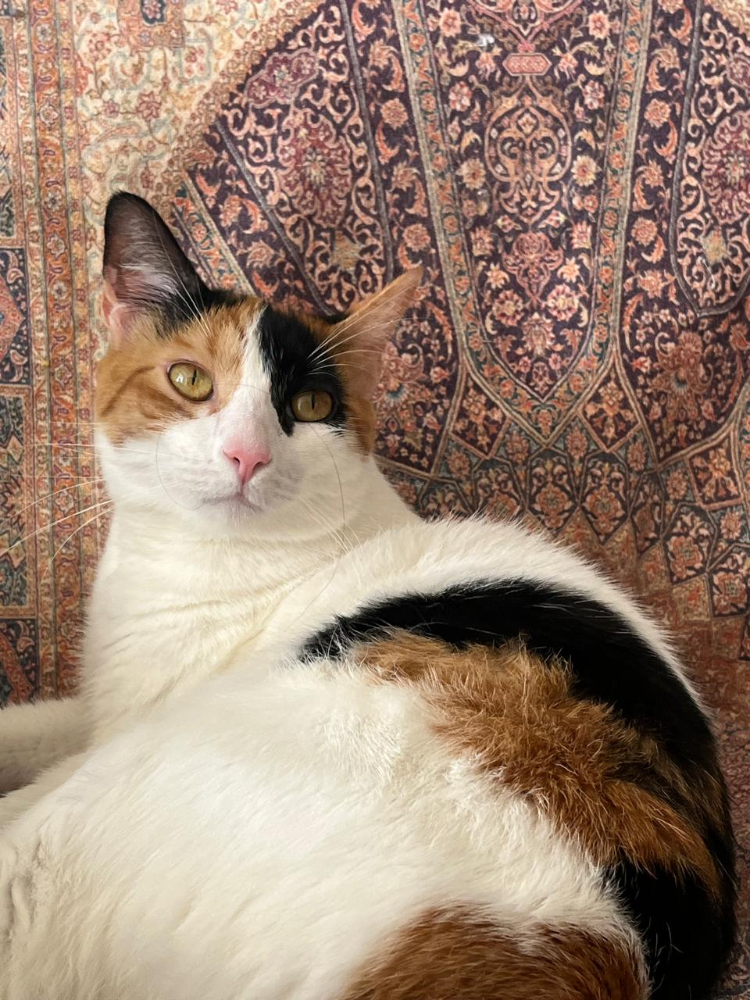

En el siglo XVIII, se nos comenzó a mirar de forma científica y sistemática. Fue aquí que se crearon las primeras clasificaciones en razas.

Primer inventario de razas: Catus domesticus, Catus angorensis, Catus hispanicus y Catus coeruleus.

Con los avances científicos e ideológicos del siglo XIX, recuperamos nuestra buena reputación como animales limpios, que nos acicalamos constantemente y convivimos con los humanos sin peligro.

Nos volvimos compañeros indispensables y queridos en los hogares de las élites.
volver a inicio Continuar el recorrido